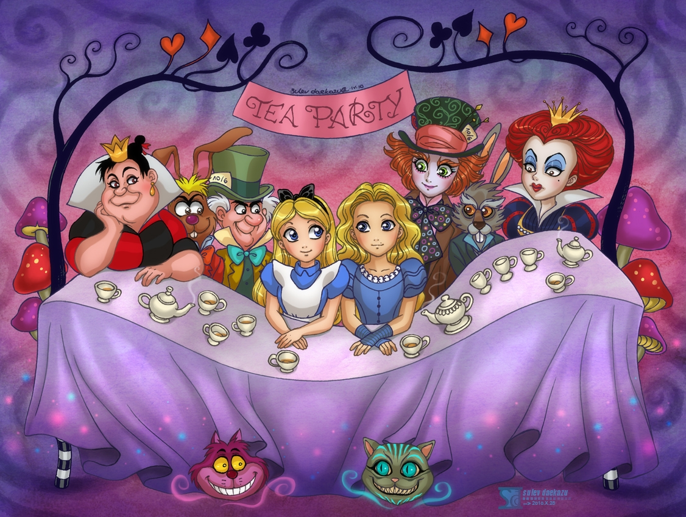
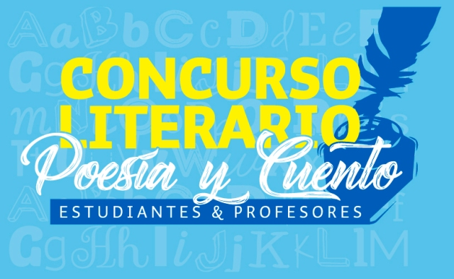
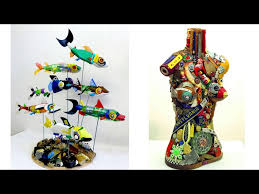
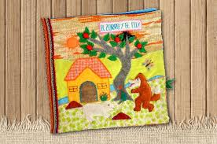

Inicio
¡Bienvenidos a una nueva edición de La Madriguera de Infratierra! Aquí encontrarás todo lo que ocurre en nuestra comunidad estudiantil, contado por sus propios protagonistas.
Comienza una nueva etapa llena de ideas, voces jóvenes y creatividad en cada página. Este periódico no es solo un espacio para informar, sino también para expresar, reflexionar y compartir lo que somos como comunidad educativa.
Aquí encontrarás noticias relevantes del colegio, entrevistas, opiniones, reportajes, arte, talento y muchas historias que merecen ser contadas. Cada artículo es fruto del esfuerzo de estudiantes comprometidos con el valor de la palabra y el poder de la comunicación.
En tiempos donde la información nos rodea por todos lados, creemos firmemente en la importancia de desarrollar un periodismo responsable, ético y cercano. Por eso, este periódico es también una herramienta para aprender a mirar el mundo con pensamiento crítico y a valorar la verdad, la empatía y el respeto.
Invitamos a toda la comunidad —alumnado, docentes, familias— a ser parte activa de este proyecto. Ya sea escribiendo, leyendo, opinando o proponiendo temas, todos podemos aportar para que este periódico siga creciendo como reflejo de nuestra identidad escolar.
Gracias por acompañarnos en esta nueva edición. ¡Pasen la página y descubran todo lo que tenemos para contar!

Noticias Escolares
| Fecha |
Título |
Resumen |
| 11 de Mayo |
Evento de Ciencia Escolar |
Los estudiantes presentaron proyectos científicos innovadores. |
| 10 de Mayo |
Nuevo Club de Robótica |
Se lanzó un nuevo club para estudiantes interesados en robótica y programación. |
| 9 de Mayo |
Concurso Literario |
Varios estudiantes ganaron premios en el concurso literario anual. |
Concurso Literario
Varios estudiantes ganaron premios en el concurso literario anual
El Concurso Literario de este año abrió sus puertas a la imaginación, la emoción y el talento oculto entre nuestras aulas. Estudiantes de distintos grados se animaron a plasmar sus pensamientos, sentimientos y mundos inventados en cuentos, poemas y ensayos que sorprendieron por su profundidad, creatividad y sensibilidad. Más que una competencia, este concurso fue un espacio de expresión libre, donde cada participante tuvo la oportunidad de contar su historia con su propia voz. Desde relatos fantásticos hasta reflexiones personales, las obras presentadas demostraron que la literatura sigue viva y fuerte en manos jóvenes y apasionadas.
Los ganadores no solo destacaron por su dominio del lenguaje, sino por su capacidad de emocionar, provocar y hacernos pensar. Sus textos no solo fueron leídos, fueron sentidos. Y eso, sin duda, es la esencia de la buena escritura.
Agradecemos a todos los que participaron por atreverse a escribir, a imaginar y a compartir. Y a quienes aún no se animan, los invitamos a preparar sus ideas… porque las palabras también pueden ser alas. Y este concurso es la prueba de ello.

Nuevo Club de Robótica
Se lanzó un nuevo club para estudiantes interesados en robótica y programación
La tecnología avanza y nuestra escuela avanza con ella. Este año damos la bienvenida al **Nuevo Club de Robótica**, un espacio donde la creatividad, la innovación y el trabajo en equipo se unen para dar vida a proyectos increíbles.
Diseñar, construir y programar robots ya no es cosa del futuro: ahora es parte de nuestra realidad escolar. El club está abierto a estudiantes curiosos y apasionados por la ciencia, la electrónica y la programación, sin importar el nivel de experiencia. Aquí, lo importante es tener ganas de aprender y de enfrentarse a nuevos desafíos. Durante las sesiones, exploraremos desde los conceptos básicos de robótica hasta la construcción de prototipos funcionales, usando plataformas como Arduino, sensores, motores y más. También participaremos en ferias, concursos y exposiciones donde mostraremos nuestro talento e ingenio.
Si alguna vez soñaste con crear tu propio robot… este es tu momento. ¡Únete al Club de Robótica y construyamos el futuro juntos!
Evento de Ciencia escolar
¡La ciencia tomó vida en nuestra escuela! El esperado"Evento de Ciencia Escolar" reunió a estudiantes, docentes y familias en una jornada llena de asombro, experimentos, descubrimientos y muchas ganas de aprender.
Desde maquetas sobre el sistema solar hasta demostraciones químicas y proyectos de robótica, los pasillos se llenaron de conocimiento, creatividad e innovación. Cada stand fue preparado con esfuerzo y dedicación por equipos que investigaron, ensayaron y compartieron con entusiasmo los resultados de sus proyectos científicos.
El evento no solo mostró cuánto hemos aprendido, sino también la pasión por entender cómo funciona el mundo. Fue una oportunidad para hacernos preguntas, buscar respuestas y, sobre todo, para demostrar que la ciencia también se vive, se toca y se disfruta.
Felicitamos a todos los participantes por su compromiso y agradecemos a los profesores y familias por el apoyo constante. ¡Ya estamos ansiosos por la edición del próximo año!
Opinión
¿Es útil la tarea en casa?
Por Mariana López - 3°B
Mientras algunos creen que ayuda a reforzar lo aprendido, otros piensan que es excesiva. Abrimos el debate en esta edición.
La tarea en casa ha sido parte de la rutina escolar por generaciones. Para muchos docentes, representa una forma de reforzar los conocimientos adquiridos en clase. Además, fomenta la responsabilidad, la organización y la práctica constante. Algunos estudiantes reconocen que hacer tareas les ayuda a entender mejor los temas y a prepararse para exámenes.
Sin embargo, hay quienes piensan diferente. Algunos alumnos y padres opinan que la cantidad de tareas es excesiva y afecta el tiempo libre, el descanso y la convivencia familiar. Después de una jornada escolar larga, muchos niños se sienten agotados y no rinden igual en casa. También argumentan que no todos los estudiantes cuentan con un ambiente adecuado para estudiar fuera del aula.
Entonces, ¿cuál es el equilibrio? Muchos expertos coinciden en que la clave está en la calidad, no en la cantidad. Tareas breves, claras y significativas pueden ser mucho más efectivas que largas hojas de ejercicios. Además, es importante tener en cuenta la edad del estudiante y su carga académica general.
En conclusión, la tarea en casa puede ser útil si se aplica con moderación y con un propósito claro. Lo más importante es que no se convierta en una fuente de estrés, sino en una herramienta que complemente el aprendizaje.
La importancia de la educación física
Por Juan Pérez
La actividad física mejora la salud, el estado de ánimo y el rendimiento académico.
La educación física no es solo un momento para jugar o moverse, sino una parte fundamental del desarrollo integral de los estudiantes. A través del ejercicio, el cuerpo se fortalece, mejora la coordinación y se previenen enfermedades como la obesidad y problemas cardíacos.Pero los beneficios no son solo físicos. Está comprobado que hacer actividad física con regularidad también ayuda a liberar el estrés, mejorar el estado de ánimo y aumentar la autoestima. Muchos estudiantes afirman sentirse más tranquilos y felices después de una clase de deportes.
Además, la educación física favorece el trabajo en equipo, la disciplina y el respeto por las reglas. Estas habilidades también se reflejan en el aula, ya que los alumnos activos tienden a tener una mejor concentración y rendimiento académico.
Por todo esto, es importante valorar esta materia tanto como las demás. La educación física no solo nos enseña a movernos, sino a vivir mejor.
Cultura y Entretenimiento
🎭 Festival de Talentos 2025
Música, danza, pintura y poesía fueron protagonistas en el evento cultural más esperado del año.
El pasado viernes, el auditorio escolar se llenó de emoción, aplausos y talento durante la edición 2025 del Festival de Talentos. Estudiantes de todos los grados se reunieron para compartir sus habilidades artísticas en una jornada llena de creatividad y pasión.
Desde presentaciones musicales con guitarra, piano y voz, hasta coloridas coreografías de baile moderno y folclórico, cada número sorprendió al público por su calidad y entusiasmo. También hubo espacio para la poesía, donde varios alumnos recitaron textos originales que emocionaron a más de uno.
Además, se inauguró una exposición de pintura y dibujo con obras realizadas por estudiantes durante el ciclo escolar. El talento visual quedó reflejado en retratos, paisajes y arte abstracto que decoraron el lugar durante todo el evento.
Familias, docentes y compañeros celebraron a los participantes con aplausos y palabras de reconocimiento. El Festival de Talentos no solo fue una muestra artística, sino también un recordatorio de lo valioso que es expresarse y compartir lo que nos apasiona.
Sin duda, fue una tarde inolvidable que demostró que en nuestra escuela hay talento… ¡y mucho!
Teatro Escolar
Una noche llena de talento, emociones y aplausos se vivió en el auditorio durante el esperado Teatro Escolar 2025. Estudiantes de distintos grados subieron al escenario para interpretar obras preparadas con esfuerzo, creatividad y mucha dedicación.
El evento comenzó con una divertida comedia que hizo reír a todo el público, seguida de un emotivo drama que tocó los corazones de muchos. También hubo espacio para la fantasía, con personajes mágicos y escenarios sorprendentes, y monólogos que demostraron la profundidad y sensibilidad de nuestros jóvenes actores.
Los espectadores, entre ellos familias, docentes y compañeros, no dejaron de aplaudir y felicitar a los participantes. Cada obra fue el resultado de semanas de ensayo y trabajo en equipo, reflejando el compromiso y la pasión por el arte escénico.
El Teatro Escolar no solo es un espacio de expresión, sino una oportunidad para que los estudiantes desarrollen confianza, creatividad y habilidades de comunicación. Este año, una vez más, demostraron que el escenario escolar está lleno de futuras estrellas.
¡Gracias a todos los que hicieron posible esta maravillosa función!
Creatividad Estudiantil
Proyectos destacados
Ana López: Escultura en reciclaje
Con creatividad, paciencia y conciencia ambiental, Ana López, estudiante de 2°A, presentó una impresionante serie de esculturas elaboradas completamente con materiales reciclados. Latas, cartón, botellas plásticas y tapas fueron transformados en verdaderas obras de arte.
Inspirada en la idea de que “nada se desperdicia si se mira con imaginación”, Ana dio vida a animales, figuras humanas y estructuras abstractas que sorprendieron por su detalle y originalidad. Su obra no solo destacó por su valor artístico, sino también por su mensaje: cuidar el planeta y reutilizar lo que otros desechan.
Durante la exposición, Ana explicó que su objetivo era demostrar que el arte puede ser una forma de cambiar el mundo, comenzando por pequeñas acciones. Su talento y compromiso con el medio ambiente fueron reconocidos por estudiantes, docentes y visitantes del evento.
Sin duda, Ana nos recuerda que la creatividad no tiene límites, y que incluso en lo que parece basura, puede haber belleza esperando a ser descubierta.

Pedro Martínez: Libro de cuentos cortos
La imaginación y el talento narrativo de Pedro Martínez, estudiante de 3°B, quedaron plasmados en su primer libro de cuentos cortos, presentado durante el Festival de Talentos 2025. La obra, compuesta por diez relatos originales, mezcla fantasía, misterio y enseñanzas profundas que capturan la atención desde la primera página.
Pedro explicó que escribe desde pequeño y que este proyecto fue una forma de compartir las historias que lleva en la mente desde hace tiempo. Cada cuento tiene su propio universo, con personajes únicos y finales sorprendentes que invitan a reflexionar.
Su libro fue ilustrado por él mismo y encuadernado a mano, lo que demuestra no solo su capacidad literaria, sino también su dedicación y amor por el detalle. Al presentar su trabajo, muchos compañeros y docentes se mostraron admirados por la madurez y sensibilidad que reflejan sus textos.
Pedro sueña con ser escritor profesional y, sin duda, este es un gran primer paso. Su libro nos recuerda que las grandes historias pueden venir de cualquier parte... incluso desde las aulas de nuestra escuela.

Lucía Fernández: Proyecto de fotografía artística
Lucía Fernández, estudiante de 4°A, presentó un fascinante proyecto de fotografía artística que capturó momentos cotidianos con una mirada única y creativa. A través de su lente, Lucía logró transformar escenas simples en imágenes llenas de significado, luz y emoción.
Su trabajo incluye una variedad de estilos, desde el blanco y negro hasta el uso de colores vibrantes, explorando temas como la naturaleza, el retrato y la vida urbana. Cada fotografía invita al espectador a detenerse y observar detalles que a menudo pasan desapercibidos. Lucía explicó que su objetivo es contar historias visuales que despierten sentimientos y reflexiones. Su proyecto fue muy bien recibido por compañeros y profesores, quienes destacaron su sensibilidad artística y técnica fotográfica.
Con este proyecto, Lucía demuestra que la fotografía es mucho más que capturar imágenes: es una forma poderosa de expresión personal y comunicación.